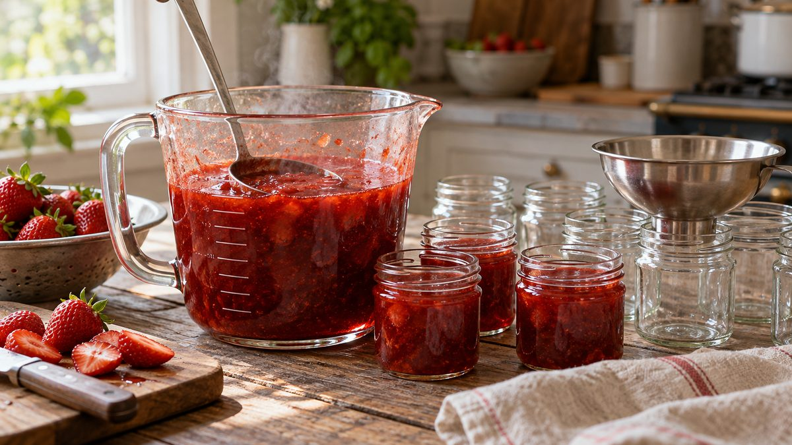

Quantos potes rende a minha receita de geleia

Você tem a receita, tem o fogão e quer vender. Falta uma conta que quase ninguém ensina: quantos potes cada lote rende, e portanto quantos potes comprar. O problema é que a receita fala em xícaras ou gramas, o pote fala em mililitros, e a geleia ainda encolhe no cozimento. A saída é medir, não calcular de cabeça.
Por que a conta de cabeça erra
Uma receita de geleia de ameixa do TudoGostoso, por exemplo, informa o rendimento como "sete potes de 230 g". Os ingredientes vêm em copos de ameixa, de água e de açúcar. Ou seja, o rendimento está em peso, e os ingredientes em volume de copo. Some a isso a água que evapora no cozimento e fica difícil prever quanto sobra no fim.
Por isso, a conta confiável parte do que existe de verdade depois do fogo: o volume da geleia pronta.
O método em quatro passos
1. Meça a geleia pronta. Com a geleia pronta, passe pra uma jarra medidora própria pra receber líquido quente e anote os mililitros. Esse é o volume do lote.
2. Descubra o volume útil do pote. A capacidade que vem no catálogo é a nominal. Na prática você não enche até a borda. Encha o pote com água até o ponto em que pretende encher de geleia e passe a água pra jarra medidora. Esse número é o volume útil.
3. Divida. Volume do lote dividido pelo volume útil do pote dá o rendimento. Arredonde pra cima quando sobrar um pedaço de pote, porque o pote incompleto também precisa de tampa e rótulo.
4. Confira com um lote real. Encha os potes de verdade e conte. Se o número diferir muito da conta, ajuste o volume útil e refaça.
Um exemplo pra ilustrar
Imagine uma receita que rende 1 litro (1.000 ml) de geleia pronta. Os números abaixo são hipóteses de exemplo, não medidas dos potes:
| Pote | Capacidade nominal | Volume útil (exemplo) | Potes por litro |
|---|---|---|---|
| Geleinha 40 ml | 40 ml | 36 ml | 28 potes |
| Quadrado 200 ml | 200 ml | 185 ml | 6 potes |
| Conserva 350 ml | 350 ml | 330 ml | 4 potes |
O que muda de um pote pro outro não é só o tamanho: o espaço sob a tampa pesa mais nos potes pequenos. Num pote de 40 ml, 4 ml a menos são 10% da capacidade. Por isso vale medir o volume útil de cada modelo que você usa, em vez de usar um percentual único.
Escalando a receita
Depois do primeiro lote, a conta de produção fica simples. Se você quer 60 potes de 40 ml e o seu lote rende 28, serão 3 lotes (84 potes) ou 2 lotes mais uma parte do terceiro. Compre potes pra produção completa e mais uma margem pra teste, pote trincado e algum que falhe na hora de encher.
Se a geleia não estiver no ponto antes de medir, o volume final muda. Por que a geleia caseira não engrossa ajuda a acertar a receita antes de fazer a conta.
Comece com um tamanho só
Pra fazer a primeira conta, escolha um tamanho de pote e rode um lote. Quando tiver o rendimento certo, a escolha do segundo tamanho fica fácil. Se estiver em dúvida entre tamanhos, como escolher o tamanho do pote pelo que você vai vender mostra as medidas reais de cada um.
Precisa de ajuda pra definir quantos potes comprar? Fale com a gente pelo WhatsApp ou veja o catálogo.